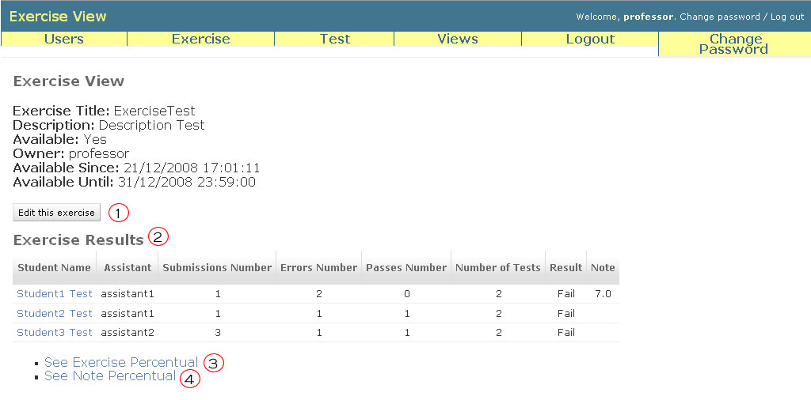

Exercise View
In List Exercises page, if you click at link in the name of exercise you will be redirect to this page, Exercise View. Here, you can edit the exercise (1), see the details of exercise (name, owner, date of creation, number of registered tests, etc.) and the results of students to this exercise (number of submissions, number of passed tests, number of errors, note and result - Pass or Fail) (2).
Additionally, you can see the percentual of right relative to the tests (3) and the note percentual of class (4).

Only the teacher and the assistants can see the details of an exercise.